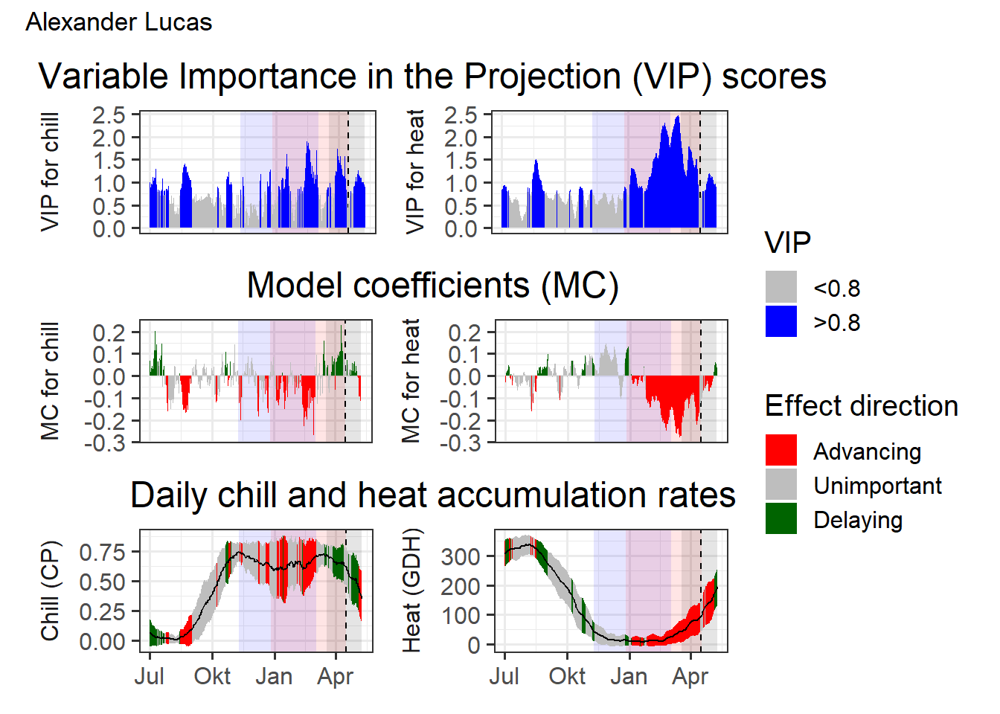
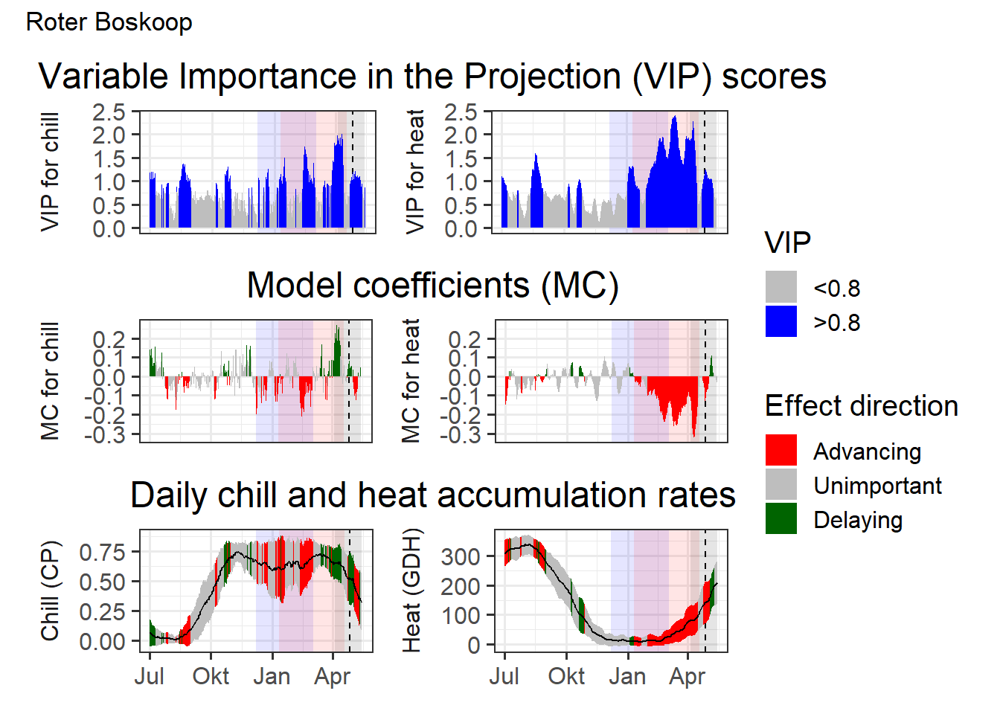
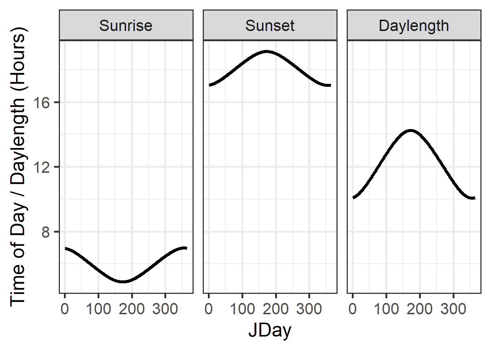

Chapter 8 Lesson 08: Making hourly temperatures
1.Choose a location of interest, find out its latitude and produce plots of daily sunrise, sunset and daylength
The chosen location with the latitude of ‘32’ can be seen below in the leaflet.
require(chillR)
require(ggplot2)
require(reshape2)
day_infos<-daylength(latitude=32,JDay=1:365)
days_df<-data.frame(JDay=1:365,Sunrise=day_infos$Sunrise,Sunset=day_infos$Sunset,Daylength=day_infos$Daylength)
days_df<-melt(days_df, id=c("JDay"))
ggplot(days_df, aes(JDay, value)) + geom_line(lwd=1.5) + facet_grid(cols=vars(variable)) +
ylab("Time of Day / Daylength (Hours)") + theme_bw(base_size = 20)
2.Produce an hourly dataset, based on idealized daily curves, for the KA_weather dataset (included in chillR)
hourly_temps_KA <- stack_hourly_temps(KA_weather, latitude=50.4)
#str(hourly_temps_KA) # to get the correct item from the list
hourly_temps_KA_df <- hourly_temps_KA$hourtemps
hourly_temps_KA_df[,"connected_timedate"] <- ISOdate(year = hourly_temps_KA_df$Year,
month = hourly_temps_KA_df$Month,
day = hourly_temps_KA_df$Day,
hour = hourly_temps_KA_df$Hour)
ggplot(hourly_temps_KA_df[3500:3660,], aes(connected_timedate,Temp)) +
geom_line(lwd=1.5) +
labs(x="Date", y="Temperature in C°", title = "Hourly modelled temperature for Week 22 in 2002") +
theme_bw(base_size = 14)
3.Produce empirical temperature curve parameters for the Winters_hours_gaps dataset, and use them to predict hourly values from daily temperatures (this is very similar to the example above, but please make sure you understand what’s going on)
require(dplyr)
kbl(Winters_hours_gaps[1:10,], escape = F) %>%
kable_paper("hover", full_width = F, position = "left")| Year | Month | Day | Hour | Temp_gaps | Temp |
|---|---|---|---|---|---|
| 2008 | 3 | 3 | 10 | 15.127 | 15.127 |
| 2008 | 3 | 3 | 11 | 17.153 | 17.153 |
| 2008 | 3 | 3 | 12 | 18.699 | 18.699 |
| 2008 | 3 | 3 | 13 | 18.699 | 18.699 |
| 2008 | 3 | 3 | 14 | 18.842 | 18.842 |
| 2008 | 3 | 3 | 15 | 19.508 | 19.508 |
| 2008 | 3 | 3 | 16 | 19.318 | 19.318 |
| 2008 | 3 | 3 | 17 | 17.701 | 17.701 |
| 2008 | 3 | 3 | 18 | 15.414 | 15.414 |
| 2008 | 3 | 3 | 19 | 12.727 | 12.727 |
coeffs<-Empirical_daily_temperature_curve(Winters_hours_gaps)
kbl(coeffs[1:10,], escape = F) %>%
kable_paper("hover", full_width = F, position = "left")| Month | Hour | Prediction_coefficient |
|---|---|---|
| 3 | 0 | 0.1774859 |
| 3 | 1 | 0.1550693 |
| 3 | 2 | 0.1285651 |
| 3 | 3 | 0.1145597 |
| 3 | 4 | 0.0696064 |
| 3 | 5 | 0.0339583 |
| 3 | 6 | 0.0000000 |
| 3 | 7 | 0.0313115 |
| 3 | 8 | 0.3121959 |
| 3 | 9 | 0.4953232 |
winters_daily<-make_all_day_table(Winters_hours_gaps, input_timestep="hour")
kbl(winters_daily[1:10,], escape = F) %>%
kable_paper("hover", full_width = F, position = "left")| DATE | Year | Month | Day | Temp_gaps | Tmin | Tmean | Tmax |
|---|---|---|---|---|---|---|---|
| 2008-03-03 12:00:00 | 2008 | 3 | 3 | 15.01593 | 7.920 | 15.01593 | 19.508 |
| 2008-03-04 12:00:00 | 2008 | 3 | 4 | NA | 3.775 | 12.81204 | 21.867 |
| 2008-03-05 12:00:00 | 2008 | 3 | 5 | NA | 6.611 | 13.75604 | 20.793 |
| 2008-03-06 12:00:00 | 2008 | 3 | 6 | NA | 3.063 | 10.51863 | 17.819 |
| 2008-03-07 12:00:00 | 2008 | 3 | 7 | NA | 3.248 | 12.43037 | 21.103 |
| 2008-03-08 12:00:00 | 2008 | 3 | 8 | NA | 6.788 | 14.63242 | 22.609 |
| 2008-03-09 12:00:00 | 2008 | 3 | 9 | NA | 6.026 | 14.59242 | 23.472 |
| 2008-03-10 12:00:00 | 2008 | 3 | 10 | NA | 5.796 | 14.54471 | 23.424 |
| 2008-03-11 12:00:00 | 2008 | 3 | 11 | NA | 6.788 | 14.59100 | 21.413 |
| 2008-03-12 12:00:00 | 2008 | 3 | 12 | NA | 6.737 | 15.14142 | 22.369 |
winters_empirical<-Empirical_hourly_temperatures(winters_daily,coeffs)
kbl(winters_empirical[1:10,], escape = F) %>%
kable_paper("hover", full_width = F, position = "left")| DATE | Year | Month | Day | Temp_gaps | Tmin | Tmean | Tmax | JDay | Hour | Temp | |
|---|---|---|---|---|---|---|---|---|---|---|---|
| 1 | 2008-03-03 12:00:00 | 2008 | 3 | 3 | 15.01593 | 7.92 | 15.01593 | 19.508 | 63 | 0 | 9.976706 |
| 41 | 2008-03-03 12:00:00 | 2008 | 3 | 3 | 15.01593 | 7.92 | 15.01593 | 19.508 | 63 | 1 | 9.716943 |
| 69 | 2008-03-03 12:00:00 | 2008 | 3 | 3 | 15.01593 | 7.92 | 15.01593 | 19.508 | 63 | 2 | 9.409812 |
| 91 | 2008-03-03 12:00:00 | 2008 | 3 | 3 | 15.01593 | 7.92 | 15.01593 | 19.508 | 63 | 3 | 9.247518 |
| 133 | 2008-03-03 12:00:00 | 2008 | 3 | 3 | 15.01593 | 7.92 | 15.01593 | 19.508 | 63 | 4 | 8.726599 |
| 151 | 2008-03-03 12:00:00 | 2008 | 3 | 3 | 15.01593 | 7.92 | 15.01593 | 19.508 | 63 | 5 | 8.313508 |
| 183 | 2008-03-03 12:00:00 | 2008 | 3 | 3 | 15.01593 | 7.92 | 15.01593 | 19.508 | 63 | 6 | 7.920000 |
| 207 | 2008-03-03 12:00:00 | 2008 | 3 | 3 | 15.01593 | 7.92 | 15.01593 | 19.508 | 63 | 7 | 8.282838 |
| 235 | 2008-03-03 12:00:00 | 2008 | 3 | 3 | 15.01593 | 7.92 | 15.01593 | 19.508 | 63 | 8 | 11.537726 |
| 273 | 2008-03-03 12:00:00 | 2008 | 3 | 3 | 15.01593 | 7.92 | 15.01593 | 19.508 | 63 | 9 | 13.659805 |
require(reshape2)
winters_empirical<-winters_empirical[,c("Year","Month","Day","Hour","Temp")]
colnames(winters_empirical)[ncol(winters_empirical)]<-"Temp_empirical"
winters_ideal<-stack_hourly_temps(winters_daily, latitude=38.5)$hourtemps
winters_ideal<-winters_ideal[,c("Year","Month","Day","Hour","Temp")]
colnames(winters_ideal)[ncol(winters_ideal)]<-"Temp_ideal"
winters_temps<-merge(Winters_hours_gaps,winters_empirical, by=c("Year","Month","Day","Hour"))
winters_temps<-merge(winters_temps,winters_ideal, by=c("Year","Month","Day","Hour"))
winters_temps[,"DATE"]<-ISOdate(winters_temps$Year,winters_temps$Month, winters_temps$Day, winters_temps$Hour)
winters_temps_to_plot<-winters_temps[,c("DATE","Temp","Temp_empirical","Temp_ideal")]
winters_temps_to_plot<-winters_temps_to_plot[200:262,]
winters_temps_to_plot<-melt(winters_temps_to_plot, id=c("DATE"))
colnames(winters_temps_to_plot)<-c("DATE","Method","Temperature")
ggplot(data=winters_temps_to_plot, aes(DATE,Temperature, colour=Method)) +
geom_line(lwd=1.3) +
ylab("Temperature (°C)") +
xlab("Date") +
ggtitle ("Different temperature methods for Winters dataset") +
scale_color_manual(labels = c("Observed", "Ideal", "Empirical"), name="Temperature", values = c("slateblue", "peru", "mediumaquamarine")) +
theme_bw(base_size = 14)